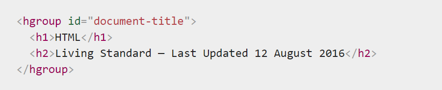
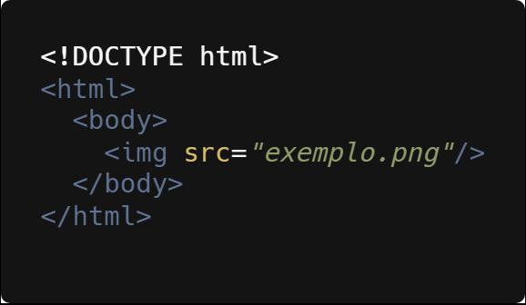
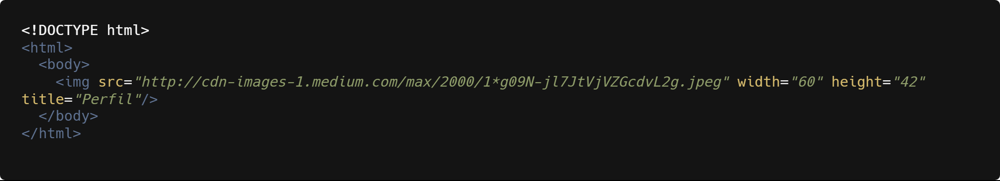
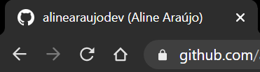

- HTML, básico
- Formatação de Texto
- Adicionando Listas
- Adicionando Imagem
- Adicionando Links
- Adicionando Tabela
- Divindo as seções da página
1. HTML, o básico
O que é HTML?
HTML: HyperText Markup Language, em português significa Linguagem de marcação de texto. Para um melhor entendimento, é a estrutura do site.
Quer ir mais a fundo? Assista abaixo um curto vídeo explicando melhor
Estrutura inicial do HTML
Acima temos a estruta do HTML. Com o DOCTYPE que não é uma TAG, mas sim uma instrução para mostrar ao navegador a versão no HTML , assim permitindo que busque a última versão do HTML.
O HTML principal tem tag de abertura e fechamento, e ele é o pai das tags head (cabeça), que contém informações que somente o navegador irá precisar. e body(corpo), TERA AS INFORMAÇÕES QUE SERAO MOSTRADA no site
A tag meta charsetdentro da head é para possibilitar a leitura de caracters especiais da lingua latina
A tag meta com o atributo NAME especifica o tipo de elemento meta que é, o tipo de informação contém. O atributo CONTENT especifica o conteúdo real do meta.
A tag title é PARA O TÍTULO DA PAGINA QUE será EXIBIDO NA BARRA DA JANELA
2. Formatação de Texto
Títulos
Os títulos tem sua ordem, sendo com maior importância a tag <h1></h1>, e com menor importância o <h6></h6>
H1 - Texto nível 1
H2 - Texto nível 2
H3 - Texto nível 3
H4 - Texto nível 4
H5 - Texto nível 5
H6 - Texto nível 6
O elemento HTML hgroup destina-se a agrupar cabeçalhos de diferentes níveis para uma seção do documento.
Paragráfo
Paragrafo usa a tag <p></p>
Caso queira uma quebra de linha, usa a tag <br>
Caso queira uma linha horizontal, usa a tag <hr>
Ênfase no texto
Para texto em negrito, use a tag <strong></strong> Ex: Essa frase esta em negrito
Para texto em itálico, use a tag <i></i> Ex: Essa frase está em itálico
Para texto pequeno, use a tag <small></small> Ex: Essa frase está pequena
Para texto marcado, use a tag <mark></mark>Ex: Essa frase está marcada
Para texto deletado com uma linha, use a tag <del></del> Ex: Essa frase está deletada
3. Adicionando Listas
Listas ordenadas
A tag <ol></ol>, são as ordered lists (listas ordenadas), ou seja, a ordem numerica importa. Como um passo-a-passo, exemplos de lista desse tipo, temos uma lista de bolo ou uma lista dos melhores lugares do mundo.
Para criar uma lista ordenada, precisamos de duas tags, a primeira claro <ol></ol>, assim determinando a lista ordenada e <li></li>, é colocada dentro da <ol></ol> para determinar cada item da lista.
Dentro da tag <ol></ol>, existe o parêmetro type, onde que configura o tipo do marcador da lista, as opções são:
- 1 - valor padrão. Cria listas númericas. Ex: 1, 2, 3, 4,...
- A - listas alfabéticas maiúsculas. Ex: A, B, C, D, ...
- a - listas alfabéticas minúsculas. Ex: a, b, c, d, ...
- I - listas números romanos maiúsculas. Ex: I, II, III, IV, ...
- i - listas números romanos minúsculas. Ex: i, ii, iii, iv, ...
Listas não ordenadas
A tag <ul></ul>é para listas não ordenadas, ou seja, a ordem numerica não importa.
A tag <li></li>, é colocada também dentro da <ul></ul> para determinar a símbolo.
Listas com descrição
A tag <dl></dl>, é para listas com descrição.
Essa tag é usada em conjunto com duas sinalizações: <dt> (que define termos/nomes) e <dd> (que informa a descrição que estará associada a cada termo ou nome).
3. Adicionando Imagem
Atributo SRC, é onde colocamos o caminho onde se encontra a imagem;
Atributo TITLE, para descrição, esse texto irá aparecer quando o mouse for passado por cima da imagem;
Atributo ALT, a função é praticamente a mesma do atributo TITLE, mas com a diferença de o texto aparecer quando a imagem não aparecer;
Outro ponto importante, é o width (largura) e height (altura), para ajuste da imagem.
Para web, os melhores formatos de imagens são o JPEG e PNG, o que vai diferenciar qual modelo você deve usar é o que você predente com a imagem. Se quiser uma imagem grande e com alta resolução, escolha o JPEG. Se quiser com fundo transparente, escolha o PNG
Tamanho de Imagem para Site
Para usa imagens em sites, é importante não deixar o tamanho da imagem grande, pois dificulta o carregamento das imagens, pois temos que pensar em todos os dispositivos, e além disso, diferentes velocidades de internet de cada usuário
Para imagem de fundo, o ideal é no máximo a imagem ter 1500 de largura
Para imagem de conteúdo, o ideal é no máximo ter 650 de largura
Via arquivo no projeto ou URL
Inserindo imagem via arquivo localizado na pasta do projeto
Inserindo imagem via URL
Imagem com legenda
Caso precise adicionar uma legenda abaixo da imagem será preciso adicionar duas novas tags, <figure></figure> e a <figcaption></figcaption>
Exemplo:

Imagens Responsivas
Para deixar a imagem Responsivas, na tag <img> você deve adicionar mais dois novos atributos:
- srcset: define o conjunto de imagens que nós iremos permitir ao navegador escolher, e qual tamanho cada imagem tem.
- sizes: define um conjunto de condições de mídia (ex.: largura da tela) e indica qual tamanho da imagem deveria ser a melhor escolha, quando certas condições de tela são verdadeiras - Estas são as sugestões que nós falamos antes.
A imagem abaixo é responsiva.
Favicon
Favicon é um ícone de favorito que fica no inferior do Title do site
A extensão para favicon é a .ico
Para adicionar, no head é preciso colocar link para favicon e no href, coloca o caminho do favicon
4. Adicionando Link
4.1 - A vs Link
A tag <a></a> tem dois atributos essenciais
- Atributo HREF, tem finalidade para adicionar link, para quando o usuário clicar for direcionado para a pagina selecionada;
- Atributo TARGET, a função é onde irá abrir a pagina. Sendo que "_blank" , abre o documento vinculado em uma nova janela ou guia. E o "_self", abre o documento vinculado no mesmo quadro em que foi clicado.
A tag <link> é para links de arquivos que se encontra dentro da pasta do projeto.
Com o <link rel="stylesheet" href="css/style.css"> dentro da tag HEAD, sera para identificar o CSS interno
Outro link importante no HEAD é o <link rel="shortcut icon" href="img/favicon.ico" type="image/x-icon">, que sera para incluir o icon na barra da janela de nevegação
4.2 - Formato de Links Importantes
Link Para Dowload
<a href="https://download.mozilla.org/?product=firefox-39.0-SSL&os=win&lang=en-US" download="firefox-39-installer.exe"></a>
Link de Email
<a href="mailto:nowhere@mozilla.org"></a>
Link para WhatsApp
<a href="https://api.whatsapp.com/send?phone=seunumerodetelefone&text=sua%20mensagem"></a>
Link para favicon
Para adicionar o favicon é preciso salvar com o formato .ico
Logo após adicione no campo o seguinte link:<head><link rel="shortcut icon" href="favicon.ico" type="image/x-icon"></head>
O atributos para os ícones:
REL - para descrever o ícone desejado.
SIZES - para resolução de tamanho do ícone.
HREF - o caminho do ícone.
6. Adicionando Tabela
Para delimitar uma tabela sera preciso adicionar a tag <table></table>
Para adicionar as linhas, use a tag <tr></tr>
E para adicionar as colunas da tabela, use <td></td>
6.1 - Organizar melhor a tabela
- Para organizar melhor o código da nossa tabela existem três outras tags. São elas:
TAG THEAD - é usada para incluir um grupo de linhas em uma tabela, como um cabeçalho.
TAG TBODY - é usada para o corpo principal da tabela.
TAG TFOOT - é usada para incluir um grupo de linhas em uma tabela, como um rodape. Por exemplo, para criar uma ultima linha com espaço para um resumo.
6.2 - Atributos para tabela
- Colspan: Permite que uma unica célula da tabela abranja a largura de mais de uma célula ou coluna.
- Rowspan: Permite que uma unica célula da tabela alcance a altura de mais de uma célula ou linha.
- Align: Alinhamento horizontal do conteúdo da célula.
- Border: Permite fazer a borda de uma tabela. Quanto maior o numero colocado no atributo border, mais grossa sera a borda da tabela.